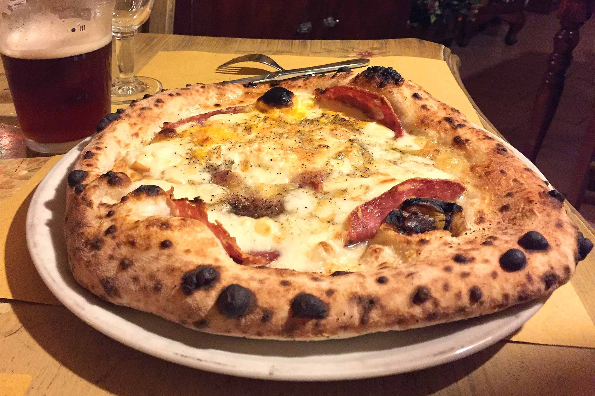

Ricette Lasagne - Le ricette di GialloZafferano Raccolta di ricette facili per primi piatti, secondi, dolci e dessert su Mangiare Bene. Ricette regiornali o internazionali, ricette per bambini, e in più ogni settimana Marina propone un nuovo menù
Ricette di cucina - Le ricette della Cucina Imperfetta Ricette Pasta. PORTATE FILTRA. Spaghetti alla Carbonara. 970 4,2 La ricetta degli spaghetti alla carbonara è tipica del Lazio ed è apprezzata in tutto il mondo grazie alla sua semplicità, facilità e bontà! Facile 25 min Kcal 680 LEGGI RICETTA. Spaghetti all'Amatriciana. 359 ...
Casatiello Con le ricette di pasta ci si può davvero sbizzarrire in quanto dagli ingredienti di mare a quelli di terra la pasta è veramente abbinabile con qualsiasi tipo di sugo o condimento. La pasta può essere cotta in vari modi al forno, al tegamino, bollita e in alcuni casi persino alla piastra, ad ogni tipo la propria ricetta.
DMFood: ricette, menu di cucina e alimenti funzionali ... Tutte le ricette scritte della trasmissione La Prova del Cuoco con gli ingredienti, procedimento e video delle ricette più buone proposte da Anna Moroni, Sergio Barzetti, Luisanna Messeri e Natalia Cattelani
Le ricette di Marianna Pascarella su RicetteDalMondo.it Tante ricette di cucina con foto facili da preparare per chiunque .Le ricette del mio blog di cucina sono spiegate passo passo e le foto dei passaggi le rendono ancora pi facili da preparare.
Le ricette della Prova del Cuoco ed É sempre mezzogiorno Entra nella community, salva le tue ricette preferite e vota quelle che ti piacciono di più! Inserisci i tuoi dati. Nome e cognome. Username. Email. Password. Numero di telefono. Accetto i Termini di utilizzo di Chef in Camicia e confermo di aver letto la Informativa sulla privacy.
Ricette di cucina, community, libri di ricette e libri di ... Tutte le ricette di cucina di Dissapore: dagli antipasti ai dolci, primi e secondi piatti di carne, di pesce e vegetariani / vegani, passando per preparazioni di pasta, pizza e pane, scopri le migliori ricette divise per categoria.. Scopri idee per colazione, antipasti, primi e secondi piatti, contorni, dolci, ricette dal mondo, tantissime ricette facili da preparare per ogni occasione: pranzi ...
ricettedelcuore Cook è il mensile di cucina del Corriere della Sera. News, ricette, inchieste, personaggi e tante curiosità legate al mondo del cibo.
Pasta - Le ricette di GialloZafferano Buonissimo, ricette di cucina facili, veloci e spiegate passo passo. Nella sezione magazine trovi inoltre benessere, sagre, articoli di cucina e molto altro. Scopri Buonissimo.
Ricette Pasta - Misya.info
2021.04.14 01:07

Accedi Registrati Menu Accedi Registrati Ricette Antipasti Primi Secondi Contorni Dolci Torte Guide Ricettari Ingredienti Elenco ingredienti Ricette per ingrediente Rubriche Ricette delle feste Torte di compleanno Menù di cucina Ricette Bimby Videoricette Contatti Chi sono
Ciao a tutti sono Misya, ovvero Flavia Imperatore, ho 34 anni, sposata con Ivano e mamma di Elisa, sono napoletana,amante dei viaggi, del buon cibo e dell'ottima compagnia.
Vai alla pagina
Contattami
Se hai bisogno di contattarmi per chiedere un aiuto in cucina o un chiarimento, compila il modulo,ti risponderò appena possibile.
Vai alla pagina
Collabora con me
Se sei un brand o un'azienda food e vuoi intraprendere una collaborazione con me e con il mio blog, contattami.
Vai alla pagina
Magazine Menu Home Ricette Primi piatti Pasta
Ricette pasta
347 ricette di pasta
La pasta è considerato l’alimento tipico italiano,è uno dei componenti principali della dieta mediterranea e che nel mondo simboleggia la cucina italiana. Tra le categorie di pasta distinguiamo la pasta secca, quella all’uovo e la pasta fresca, tutte e tre vengono realizzate in diverse forme ognuna delle quali è adatta a vari tipi di condimenti e cottura. Con le ricette di pasta ci si può davvero sbizzarrire in quanto dagli ingredienti di mare a quelli di terra la pasta è veramente abbinabile con qualsiasi tipo di sugo o condimento. La pasta può essere cotta in vari modi al forno, al tegamino, bollita e in alcuni casi persino alla piastra, ad ogni tipo la propria ricetta.
Vedi anche : Pasta facili , Pasta veloci , Pasta light
Migliori ricette Pasta
Ricette Pasta più richieste
Pasta con asparagi e pancetta Bucatini all’amatriciana Farfalle al salmone Pasta zucchine e gamberetti
Ricette Pasta di Aprile
Pasta con avocado Pasta con le fave Lasagne ai carciofi Pasta con tonno e cipolla
Pasta asparagi e gamberi
Preparazione: 20 min Cottura: 10 min
Delicato sorrentino
Preparazione: 20 min Cottura: 10 min
Pasta porri e speck
Preparazione: 10 min Cottura: 10 min
Pasta con crema di spinaci e guanciale
Preparazione: 15 min Cottura: 15 min
Pasta con crema di cipolle
Preparazione: 10 min Cottura: 30 min
Pasta con feta e pomodorini
Preparazione: 10 min Cottura: 30 min
Pasta con mandorle e salsiccia
Preparazione: 10 min Cottura: 10 min
Pasta al forno con tonno e mozzarella
Preparazione: 30 min Cottura: 20 min
Pasta con crema di olive
Preparazione: 10 min Cottura: 10 min
Pasta con ricotta
Preparazione: 10 min Cottura: 10 min Altre ricette Pagina 1 di 35 1 2 3 4 5 ... 10 20 30 ... » Ultima »
Ricette
Antipasti Conserve Contorni Cucina tipica italiana Dolci Finger food Insalate Lievitati Liquori e cocktail Minestre e zuppe Pesce Piatti unici Primi piatti Pasta Lasagne Pasta fredda Pasta fresca Pasta ripiena Primi piatti di pesce Primi piatti estivi Primi piatti freddi Primi piatti sfiziosi Primi piatti veloci Riso Ricette Base Ricette Bimby Ricette dal mondo Ricette delle feste Ricette light Ricette per bambini Rustici Salse e sughi Secondi piatti Senza glutine Vegane Vegetariane Videoricette Sottocategorie
Pasta
Pasta (Tutte le ricette) Lasagne Pasta fredda Pasta fresca Pasta ripiena
Iscriviti alla Newsletter
Iscriviti alla nostra newsletter per essere sempre informato sulle ultime novità.
Raccolte di ricette
Carbonara: 5 varianti 10 ricette dolci semplici da preparare Cornetti fatti in casa Crostate morbide
Trucchi e consigli
Glossario gastronomico Antipasti con pasta sfoglia Ricette al gratin Ricette con i cereali
Seguimi sui social
Le immagini e le ricette di cucina pubblicate sul sito sono di proprietà di Flavia Imperatore e sono protette dalla legge sul diritto d'autore n. 633/1941 e successive modifiche. Misya.info è un sito della Misya S.r.l. unipersonale - P.IVA 07248321213 - Napoli - Leggi la Privacy Policy Accedi × Effettua l'accesso all'area riservata utilizzando le tue credenziali Recupero password × Inserisci la tua email o username e riceverai una mail per il recupero!